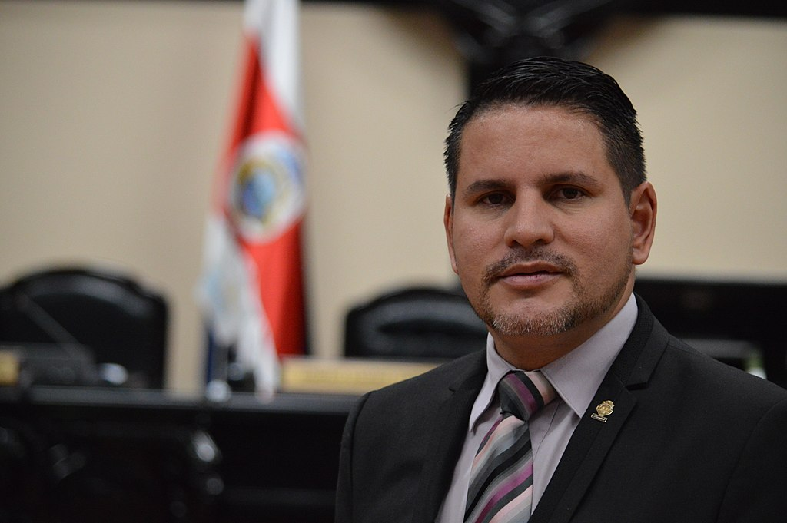

El objetivo principal de esta página es informar a los cuidadanos los diferentes candidatos presidenciales, partidos políticos y planes de gobierno.
Le motivamos a que tome una decisión informado en el momento de ejercer su voto.
Fabricio Alvarado Muñoz
Partido Restauración Nacional

Frases
“Costa Rica ya no desea más de lo mismo. No desea las campañas políticas de siempre. Por eso, yo me sumo a lo que ha decidido Costa Rica”.
“Le devolvimos la esperanza a este país en esta campaña electoral”.
“Este movimiento pretende llevar a Costa Rica a una plataforma internacional de primer mundo. A través del emprendimiento, la creatividad y la innovación”.